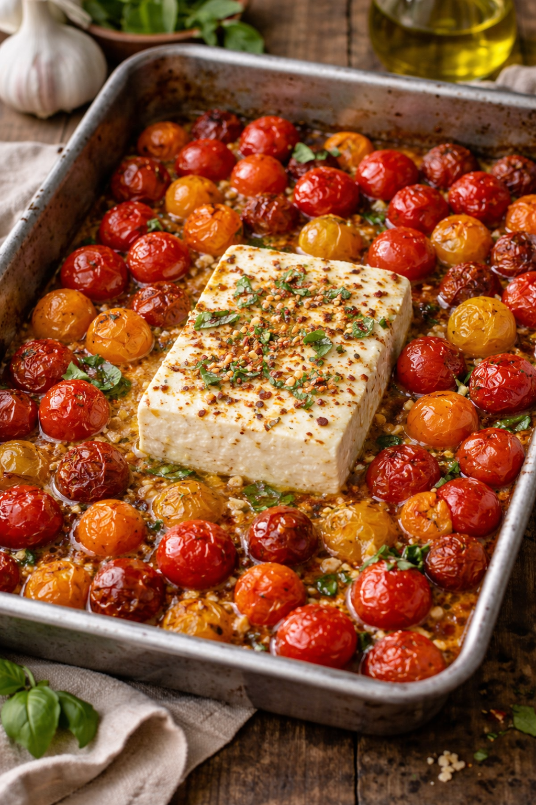

Home
Baked Feta and Tomato Pasta Recipe

Description
This is the recipe for a homemade baked feta and tomato pasta. It's tastiest with tagliatelle pasta, though macaroni and penne is also apparently good.
The ingredients are;
- 550-680g Cherry Tomatoes
- 1 Shallot, quartered - or red onion if don't have
- 118.4 ml Olive Oil
- ~220g Feta (drain well and handle with care so as not to break apart)
- 3 Thyme Sprigs
- 3 Garlic Cloves, smashed
- Pinch of crushed red pepper flakes
- 1 Lemon (for zest)
- ~340g Pasta
- Basil leaves (for serving)
The Steps;
- Preheat oven at 200 degrees celcius.
- In a large ovenproof skillet or medium baking dish, combine shallot, garlic, tomatoes, and all but 1 Tbsp. oil; season with salt and red pepper flakes and toss to combine.
- Place feta into center of tomato mixture; drizzle with reserved 1 Tbsp. oil. Scatter thyme sprigs over tomatoes.
- Bake sauce until tomatoes are bursting and feta is golden on top, 40 to 45 minutes - be careful not to burn everything.
- Meanwhile, in a large pot of boiling salted water, cook pasta, stirring occasionally, until al dente according to package directions. Reserve 118.4 ml pasta water before draining.
- To serve, add cooked pasta, reserved pasta water, and lemon zest (if using) and stir until combined. Top with basil.